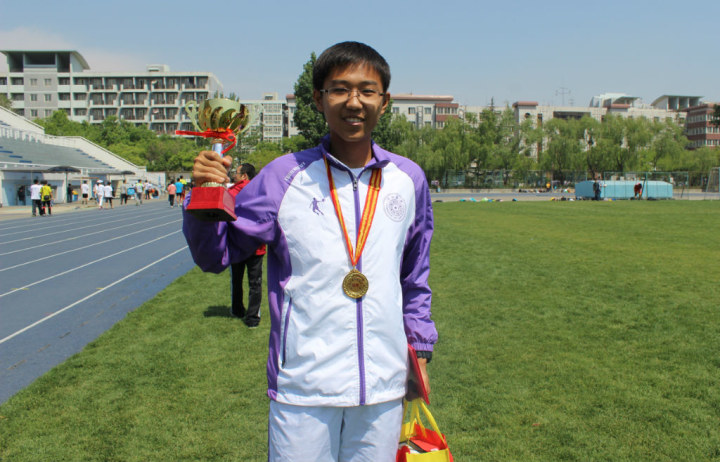

Meng, Yue (孟岳)
(Background music: 《可我不想走》)I am a 2nd year grad student at MIT AeroAstro, working in REALM lab.
My research interests are certifiable autonomy & AI.
Before that, I was an AI Resident at IBM Thomas J. Waston Research Center.
I received an M.S. degree in ECE at UC San Diego and worked in ERL and WCSNG.
I obtained my B.S. degree in the Department of Automation from Tsinghua University.
|
|
|
|
|

|
|
|
|
|
|
|
|
|
|
Contact
Email: mengyuethu@gmail.com
Email: mengyue@mit.edu
Publications
 |
Learning Density Distribution of Reachable States for Autonomous SystemsY. Meng, D. Sun, C. Fan In this work, we propose a data-driven method to compute the density distribution of reachable states for nonlinear systems. Our approach learns system dynamics and the state density jointly from trajectory data, guided by the fact that the state density evolution follows the Liouville partial differential equation. We show that our learned solution can produce a much more accurate estimate on density distribution, and can quantify risks less conservatively and flexibly compared with worst-case analysis. |
 |
Reactive and Safe Road User Simulations using Neural Barrier CertificatesY. Meng, Z. Qin, C. Fan We proposed a reactive agent model which can ensure safety by learning high-level decisions from expert data and a low level decentralized controller guided by the jointly learned decentralized barrier certificates. Empirical results show that our approach can achieve a significant improvement in safety while being similar to human behaviors. |
 |
AdaFuse: Adaptive Temporal Fusion Network for Efficient Action RecognitionY. Meng, R. Panda, C. Lin, P. Sattigeri, L. Karlinsky, K. Saenko, A. Oliva and R. Feris This paper introduces an adaptive temporal fusion, AdaFuse, that dynamically fuses channels for strong temporal modelling. Extensive experiments on SomethingV1\&V2, Jester and Mini-Kinetics show AdaFuse achieves 40\% computation savings with comparable accuracy to state-of-the-art methods |
 |
AR-Net: Adaptive Frame Resolution for Efficient Action RecognitionY. Meng, C. Lin, R. Panda, P. Sattigeri, L. Karlinsky, K. Saenko, A. Oliva and R. Feris This paper proposes a novel approach, AR-Net (Adaptive Resolution Network), that selects on-the-fly the optimal resolution for each frame conditioned on the input for efficient action recognition in long untrimmed videos. Extensive experiments on several action recognition datasets well demonstrate the efficacy of our method over state-of-the-art. |
 |
Learning 3D-aware Egocentric Spatial-Temporal Interaction via Graph Convolutional NetworksC. Li, Y. Meng, S. Chan and Y. Chen This paper proposes a 3D-aware egocentric spatial-temporalinteraction framework for automated driving applications. Graph convolution networks (GCN) is devised for interaction modeling. Extensive experiments are conducted using Honda Research Institute Driving Dataset. |
 |
Localization and Mapping using Instance-specific Mesh ModelsQ. Feng, Y. Meng, M. Shan and N. Atanasov This paper focuses on building semantic maps, containing object poses and shapes, using a monocular camera. Our contribution is an instance-specific mesh model of object shape that can be optimized online based on semantic information extracted from camera images. |
 |
SIGNet: Semantic Instance Aided Unsupervised 3D Geometry PerceptionY. Meng, Y. Lu, A. Raj, S. Sunarjo, R. Guo, T. Javidi, G. Bansal and D. Bharadia This paper introduces SIGNet, a novel framework that provides robust geometry perception without requiring geometrically informative labels. SIGNet is shown to improve upon the state of art unsupervised learning for geometry perception by 30% |
 |
Dense Spatial Segmentation from Sparse Semantic InformationQ. Feng, Y. Meng and N. Atanasov This paper develops an environment representation that affords reasoning about the occupancy of space, necessary for safe navigation, and about the identity of objects, necessary for complex task interpretation. |
 |
Cooperative Driving Strategies for Nonsignalized IntersectionsYue Meng, Li Li, Fei-Yue Wang, Keqiang Li and Zhiheng Li We study the difference between two major strategies of cooperative driving at intersections: the “ad hoc negotiation based” strategy and the "planning based" strategy. We carry out a series of simulations under different traffic scenarios for comparison. Results indicate the performance of a strategy mainly depends on the passing order of vehicles that it finds. |
Links
Collecting
Routine
Procastination
Ph.D.
Robotics
Technician
Blogs
Soccer
 |
High school friends in THU-PKU Derby, 2014 |
 |
Champion at Tsinghua Futsal Tournament, 2014 |
 |
Champion at Automation Tournament, 2016 |
 |
Champion at Chinese Alumni League, 2017 |
 |
Champion at SV Alumni Soccer Tournament, 2019 |
Running
 |
High school record, 2012 (3000m race) |
|  | Unlimited relay race champion at BUAA, 2014 |
 |
1500m race champion, Tsinghua Sports Meeting, 2015 |
 |
4*800m race champion, Tsinghua Sports Meeting, 2015 |
 |
4*400m race champion, Tsinghua Sports Meeting, 2016 |